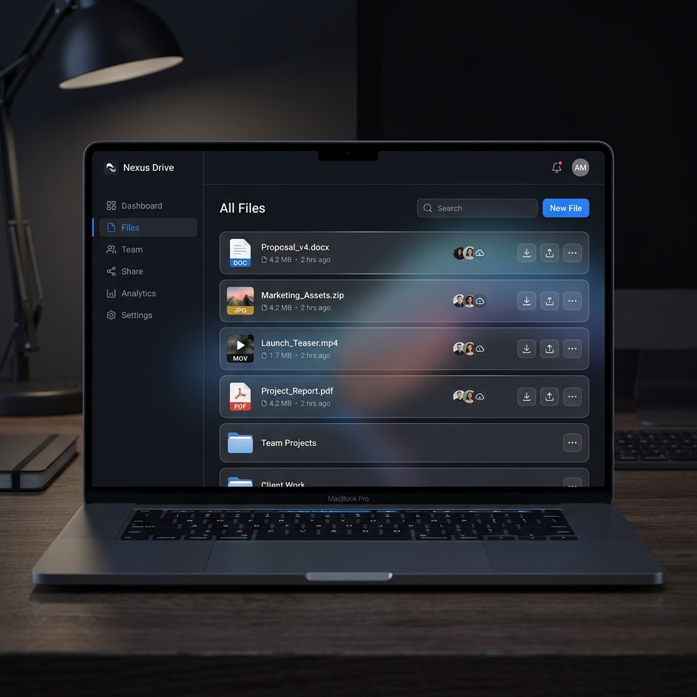

同一 WiFi 就能传，不用装 App。
手机、电脑、平板在同一个网络下，扫码即可互传文件。无需数据线，无需注册账号。

为现代开发者与多设备家庭打造
利用局域网物理带宽，上传下载无需公网，大文件秒传。
内置视频串流支持，手机端直接点播 PC 上的高清视频。
响应式 Web 界面，手机、平板、电脑扫码即刻互联。
基于 Socket.IO，文件变更、在线设备状态全网实时同步。
只需简单几步，即可在您的 Windows 或 Linux 服务器上运行。
start.bat{
"port": 3000,
"sharedDirs": {
"视频库": "D:\\Videos",
"项目工程": "E:\\Projects"
}
}